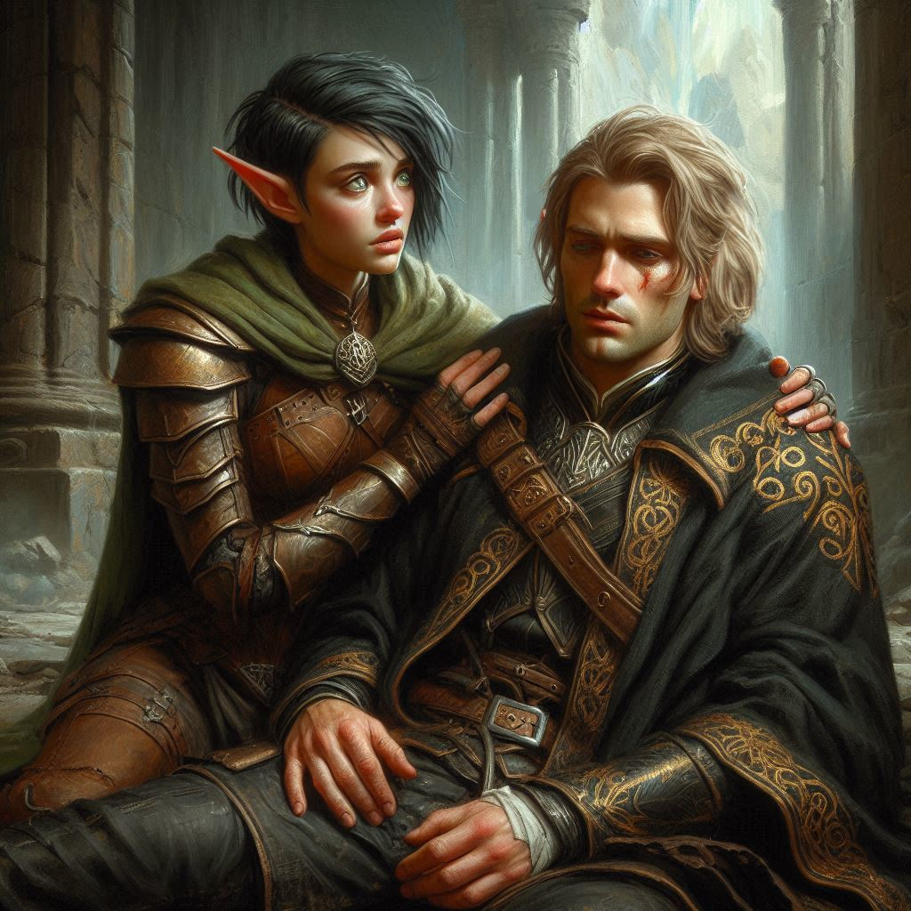

Redemption and Escape
The sky above Umbra’Thal is torn asunder, fractured by the dark magic that has ravaged the land. The ground beneath your feet trembles, cracking open as the realm begins to collapse. You stand there, heart pounding, staring at Jorsh. His power is fading, but his eyes burn with fierce determination—a man on the edge of his final decision.
“Kira,” Jorsh says, his voice soft but filled with sorrow. “This is the only way. I have to seal the portal before the dark elves invade Belladonna. If they get through… there will be nothing left to save.”
Your heart clenches at his words. Jorsh—the boy you once loved, now a man twisted by dark magic—has chosen to sacrifice himself for a world that might never forgive him. You take a step toward him, but Elias’s hand on your shoulder pulls you back. His touch is grounding, a reminder of the choice you’ve already made.
“There has to be another way,” you whisper, eyes locked on Jorsh. “You don’t have to do this alone.”
But Jorsh shakes his head. “This was always my path, Kira. I chose darkness, but… I’m choosing something different now.” His gaze softens as he looks at you, and for a brief moment, the boy you once knew shines through the darkness. “You gave me hope, even when I didn’t deserve it. Let me do this for you. For Belladonna.”
The ground rumbles, and the portal at the heart of the dark elf realm begins to glow, pulsing with malevolent energy. You can feel the magic calling out, threatening to tear the veil between worlds apart. Dark elves swarm around the portal, their voices chanting in a language you don’t understand, summoning more destruction.
Jorsh turns away from you, raising his hands toward the portal. His dark magic flares to life one last time, swirling in a storm of shadows and light. He’s drawing on every ounce of power he has left, and you can feel it—the weight of his sacrifice pressing down on your chest.
“Jorsh, wait!” you call, but he’s already begun. His magic lashes out, connecting with the portal. It flares violently, dark tendrils of power whipping through the air as he begins to close it.
The dark elves scream in fury, charging toward him, but you and Elias rush forward, cutting them down before they can reach him. The battle is chaos, but your focus is unwavering. You fight with every bit of strength you have, pushing the elves back as Jorsh’s power grows.
But then, you feel it—something’s wrong. Jorsh’s magic is consuming him. His body trembles, dark veins spreading across his skin as the portal resists his efforts. He’s giving too much, and it’s killing him.
“Jorsh!” you shout, but he doesn’t stop. He’s too far gone, too committed to turning the tide of war in one final, irreversible act.
The portal flickers, the swirling darkness pulling inward as Jorsh forces it closed. But with each second, you see the toll it’s taking. His breaths grow shallow, his face pale. He’s sacrificing everything.
You cut down another dark elf, desperation clawing at you. Elias is at your side, fighting fiercely, but even he knows the truth. This is Jorsh’s end.
Finally, with a deafening roar, the portal seals shut. The dark elf realm shudders, and then everything goes silent. The battlefield is still.
You turn to Jorsh, but he’s already collapsing to the ground, his magic spent. His body is fragile now, broken by the power he wielded. You rush to his side, dropping to your knees beside him.
“Jorsh,” you whisper, cradling his head in your lap. His eyes flutter open, just barely, and he looks at you with a small, pained smile.
“It’s… over,” he says, his voice barely a whisper.
Tears blur your vision as you shake your head. “You didn’t have to do this. We could have found another way.”
Jorsh’s hand trembles as he reaches for yours, his fingers weak but warm. “This was always my fate. But I’m glad… I could be here… with you.”
You feel your heart breaking as his eyes begin to close. The boy you once loved—the man who lost his way—found his redemption in the end. But it came at a terrible cost.
“I never stopped loving you,” you whisper, the words heavy with grief.
Jorsh’s lips curve into a faint smile, and with his last breath, he whispers, “I know.”
And then he’s gone. The darkness that once consumed him fades away, leaving only the man he could have been.
You sit there for a moment, the weight of everything crashing down on you. The battle is over. The portal is sealed. Belladonna is safe. But Jorsh is gone, and the hole he leaves behind is vast and painful.
Elias kneels beside you, his expression somber but steady. “Kira,” he says gently. “We need to go. This place won’t hold much longer.”
You nod, though it feels like your heart is anchored to this spot. Slowly, you rise to your feet, letting Elias help you as the dark elf realm begins to collapse around you. The ground trembles, the sky cracks, but you move forward, step by step, leaving behind the place where Jorsh made his final stand.
As you and Elias step through the fading remnants of the dark elf kingdom, the air shifts. The realm is transforming, the darkness lifting in Jorsh’s wake. The threat to Belladonna is gone, for now, but the scars of this war will linger.
Elias walks beside you in silence, his presence a quiet support. He doesn’t say anything about Jorsh, doesn’t try to fill the space with empty words. Instead, he offers you his strength, his unwavering loyalty, and it’s enough.
The journey back to Belladonna is long, and as you travel, you reflect on everything that’s happened. Jorsh’s sacrifice has saved countless lives, and though the grief is sharp, there’s also a strange peace. He wasn’t lost to the darkness, not completely.
When you finally return to Belladonna, the city greets you as heroes. But you feel forever changed. The weight of the journey, the battles fought, and the love lost will always be a part of you. Yet, with Elias by your side, you know you’ll carry on.